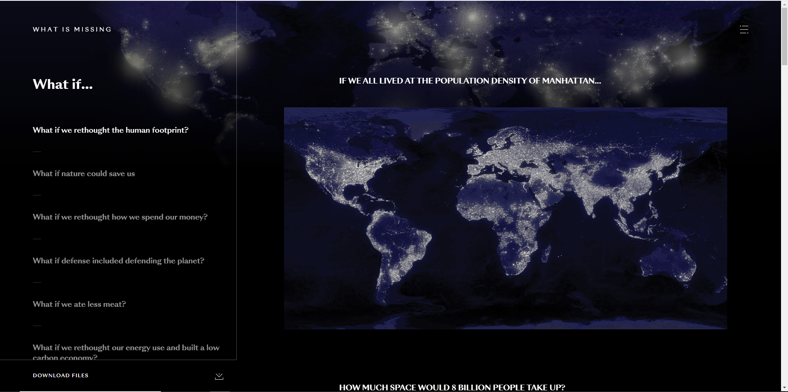
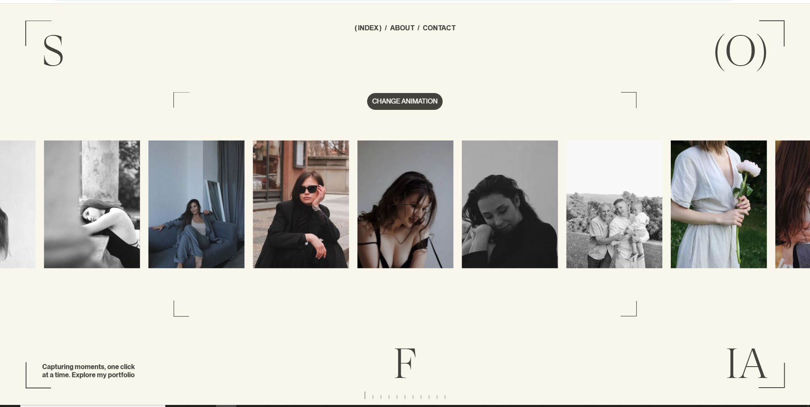

Aquí están las webs que más me han gustado.
Me ha llamado la atención la presentación minimalista y elegante, tiene mucha limpieza y orden, lo que le aporta seriedad y confianza.
Gran originalidad, juega con una narrativa para introducir al usuario en el problema. Este trata del efecto que estamos causando sobre la naturaleza.

Me parece muy interesante y divertido cómo se puede interactuar con los elementos de la web pasando el cursor por encima.
Muy original a la hora de presentar los perfiles, tiene una parte narrativa e interactiva que llama mucho la atención y funciona bastante bien, se entiende y es fácil de usar.